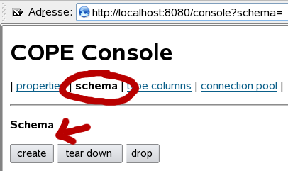
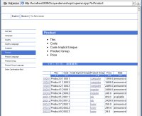
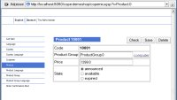

Cope with Object Persistence
Web Application Trail

COPE itself doesn't care,
whether it runs in a web container or not.
However it provides some additional convenience,
when used within web applications.
COPE must be told, where to connect to the database.
Within a servlet you probably
want to do this in the init() method.
The file cope.properties should be in the
WEB-INF subdirectory to protect it against client access.
So you will probably want to write something like this:
public void init() throws ServletException
{
Main.model.setPropertiesInitially(
new com.exedio.cope.Properties(
new File(getServletContext().
getRealPath("WEB-INF/cope.properties"))));
}
For your convenience, there is a helper method,
which does just that:
public void init() throws ServletException
{
ServletUtil.initialize(Main.model, getServletContext());
}
Even this can be ommitted, if you use the TransactionFilter
explained below.
Please note, that setPropertiesInitially is idempotent,
it doesn't hurt to call it more than once,
for example if you have more than one servlet.
From the
Transaction Trail you
already know, how to use transactions with COPE.
With a single servlet you may want to write something like this:
protected void doGet(
HttpServletRequest request,
HttpServletResponse response)
{
try
{
Main.model.startTransaction();
...
Main.model.commit();
}
finally
{
Main.model.rollbackIfNotCommitted();
}
}
However, this is not always feasible.
Sometimes you just don't have a single servlet
(or a small number of servlets)
in your application.
Even worse, the method doGet could be called reentrantly.
This is very common when using the struts framework.
A nice solution for both problems is delegating the transaction handling into a
filter.
Class
TransactionFilter
provides such a filter.
It must be deployed in your
web.xml:
<filter>
<filter-name>TransactionFilter</filter-name>
<filter-class>com.exedio.cope.util.TransactionFilter</filter-class>
<init-param>
<param-name>model</param-name>
<param-value>com.exedio.demoshop.Main#model</param-value>
</init-param>
</filter>
<filter-mapping>
<filter-name>TransactionFilter</filter-name>
<url-pattern>*.do</url-pattern>
<dispatcher>REQUEST</dispatcher>
</filter-mapping>
The example above applies the filter for all request to *.do,
a typical setting for struts.
It assumes, that the main class resides in package com.exedio.demoshop,
please adapt this to your package.
As a side effect, the TransactionFilter initializes the
model in its own init(),
so you don't have to care about it anymore.

When you start up your web application,
you have to create the database schema at least once.
This is done by calling Main.model.createDatabase().
Instead of putting a button somewhere in a jsp of your application,
you can use the COPE Console,
which assists you in creating/dropping/migrating the database schema
and more.
On the right you see the relevant part of the COPE Console.
The button create creates the database schema,
the button drop drops it.
To deploy the COPE Console in your application,
put the file exedio-cope-console.jar into your
WEB-INF/lib directory.
Then you just mount another servlet within your web.xml:
<servlet>
<servlet-name>console</servlet-name>
<servlet-class>com.exedio.cope.console.ConsoleServlet</servlet-class>
<init-param>
<param-name>model</param-name>
<param-value>com.exedio.demoshop.Main#model</param-value>
</init-param>
</servlet>
<servlet-mapping>
<servlet-name>console</servlet-name>
<url-pattern>/console/*</url-pattern>
</servlet-mapping>
Note, that the trailing "/*" in the url-pattern is mandatory,
otherwise the servlet cannot deliver it's resources
(style sheet etc).


Copernica is an experimental generic backoffice for COPE.
It allows the user to query and manipulate the data stored
in a COPE model.
Although Copernica is still in a very early stage of development,
it already allows access to the persistent data
suitable for development and debugging.
Deploying Copernica in your application
is very similar to the COPE console.
Put the file exedio-copernica.jar into your
WEB-INF/lib directory
and the following snippet into your web.xml:
<servlet>
<servlet-name>copernica</servlet-name>
<servlet-class>com.exedio.copernica.CopernicaServlet</servlet-class>
<init-param>
<param-name>model</param-name>
<param-value>com.exedio.demoshop.Main#model</param-value>
</init-param>
</servlet>
<servlet-mapping>
<servlet-name>copernica</servlet-name>
<url-pattern>/copernica/*</url-pattern>
</servlet-mapping>
This was the web application trail of the cope tour.
You may now proceed to trails:
-
Searching Trail
gives you an introduction into the searching capabilities of cope.
-
Field Reloaded Trail
covers all the more specific possibilities to store data with cope.
-
Schema Trail
shows you the schema evolution support of the COPE Console.